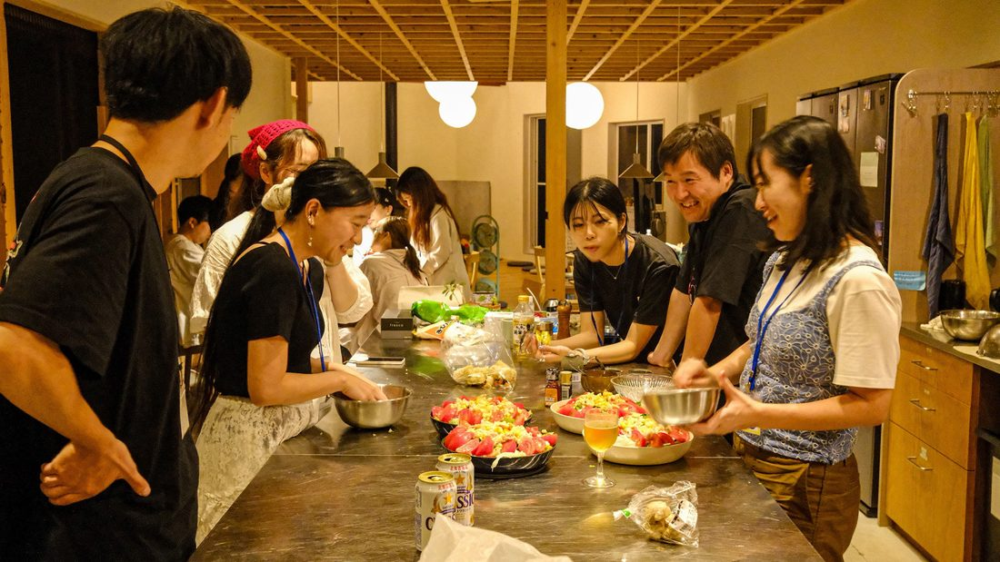
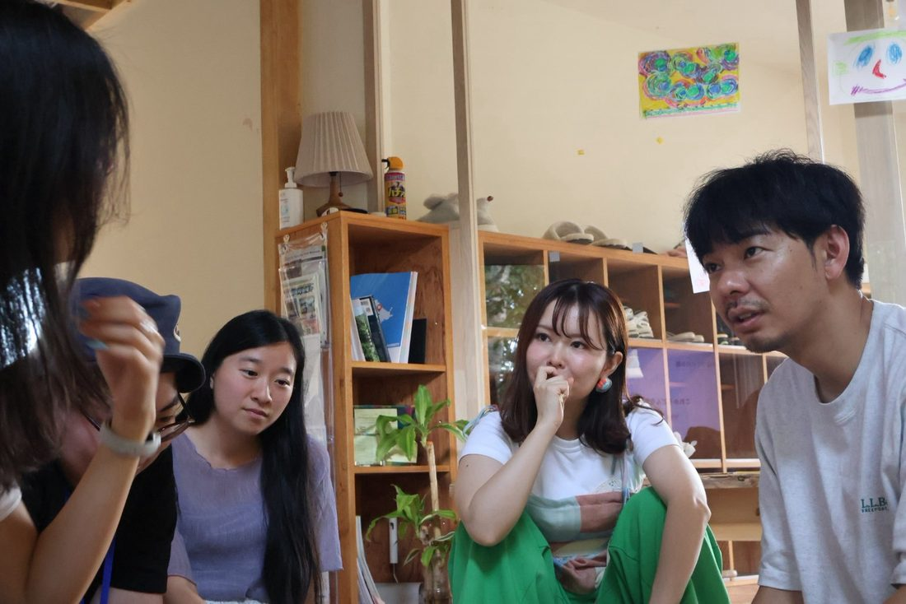
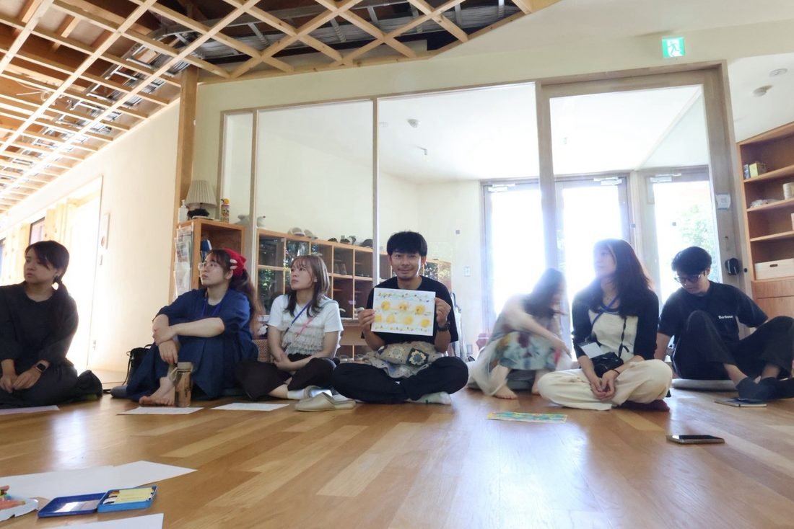
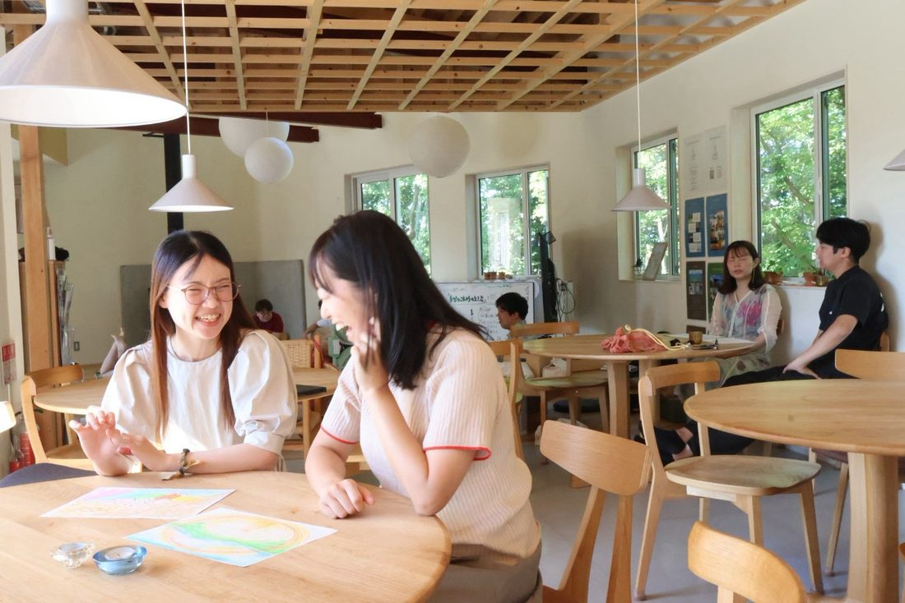
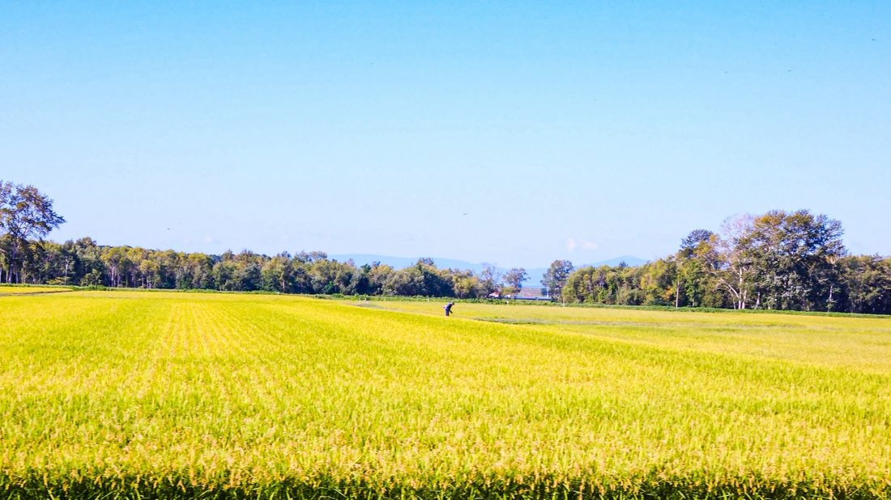
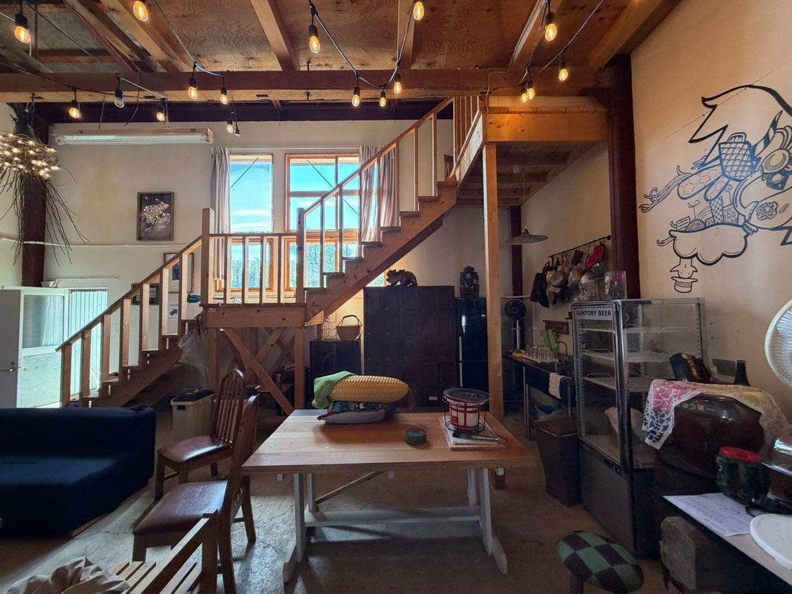
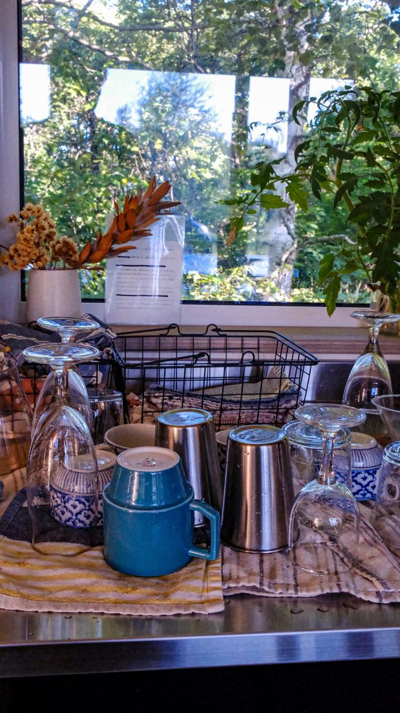
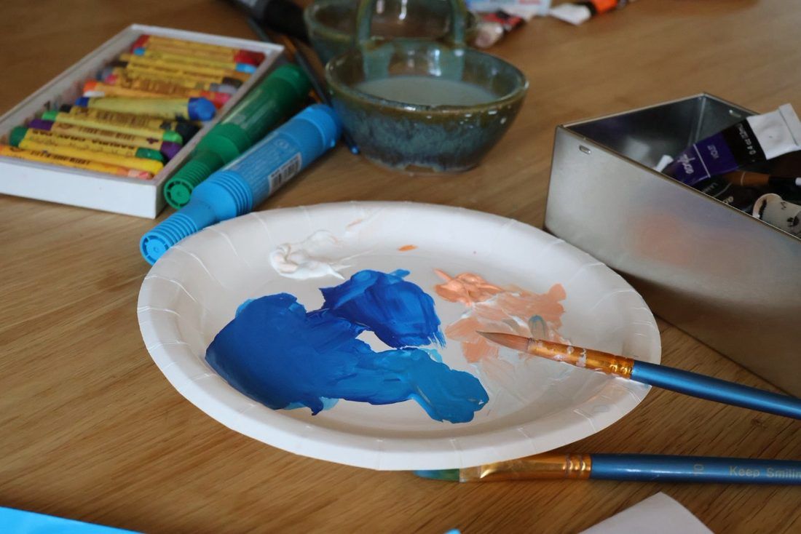
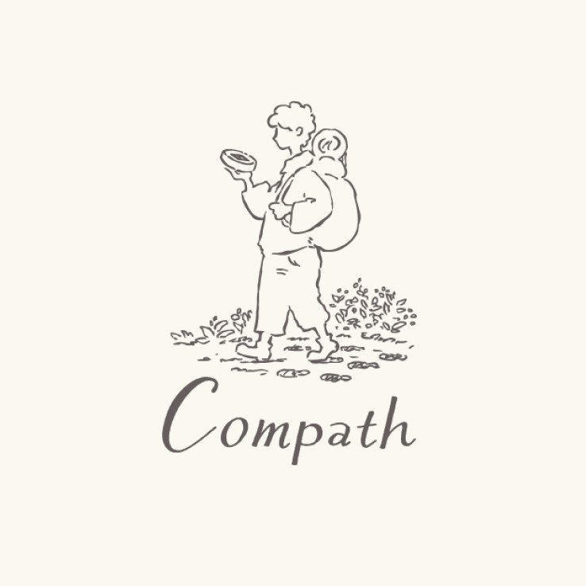

1月から11月まで、月に一枚ずつ選んだ写真を持って、北海道・東川町へ。それを並べて一年をたどり、冬のまちを歩いて、いまの自分の目が何に止まるのかを確かめる2泊3日です。まだ9月ですが、年末に立ち止まる時間は、年末になってからでは取れません。

過去の写真から、一年を振り返る。
問い：この一年、何を見ながら歩いてきた？
東川を歩き、今の自分が惹かれるものを見る。
問い：今、何に目が向いている？
2日間を振り返り、対話する。
問い：これから何を大切にしていきたい？
まだ9月に「一年の振り返り」と言われても、早いと思われると思います。それでもいまご案内しているのは、毎年こうなるからです。
年始に決めたことを、もう思い出せない。
手帳の1月のページに何か書いた記憶はあります。中身は忘れました。
夏が終わって、今年も残り4ヶ月だと気づいた。
早い。そして、まだ何も変わっていない気もする。
去年の年末も、気づいたら年が明けていた。
12月は、毎年いちばん慌ただしい月になる。
立ち止まる時間は、いつも「落ち着いたら」になる。
そして、落ち着く日はなかなか来ない。年末に立ち止まる時間は、年末になってからでは取れません。だからこの3日間は、9月のいまご案内しています。

一年を振り返るとき、あなたは何をしますか。手帳を開いたり、カメラロールをさかのぼったり。ただ、それを年末の慌ただしい数日でやろうとして、結局そのまま年を越してしまう、ということが起きがちです。
この3日間でやるのは、その作業です。1月から11月まで、その月を思い出す写真を一枚ずつ選んで持ってきてもらい、11枚を並べながら、どこで誰といて何に時間を使っていたのかを思い出していきます。翌日は冬のまちに出て、いまの自分の目が何に止まるのかを、もう一度写真で確かめる。過去に撮った写真と、これから撮る写真。手がかりは、この2種類だけ。
3日目の終わりに持ち帰ってもらいたいのは、次の一年で大切にしたい方角と、まだ答えを出さずに持っておきたい問い。それぞれひとつかふたつあれば十分で、来年の目標が決まっていなくても構いません。綴じるのは2026年で、紡ぐのはそのあとです。
いまはまだ9月なので、振り返りの話をされても気が早いと感じられると思います。それでも募集を始めているのは、12月の週末と旭川空港行きの便が先に埋まっていくからで、もうひとつ、この3日間には申し込んだ日から始まる部分があるからです。次の「事前準備」に書いた、11枚のことです。
会場も日数も8月の第1回と同じですが、狙いは反対のほうを向いています。
8月に同じ校舎で3日間を過ごしてみて、ひとつ思ったことがあります。POOLOに集まる人は、話すことや自己開示の最初の一歩が得意な方が多い。そのぶん、そこから先の、深く自分と向き合って対峙するところは、無意識に避けてしまうこともあるのではないか。夏が東川に出会うところから世界の広がっていく3日間だとすれば、冬は東川を使って自分のほうを見る3日間にしたくて、時間の多くをそこに置きます。
北海道のほぼ中央、大雪山国立公園の麓に東川町があります。人口はおよそ8,400人。上水道がなく、8,400人全員が地下水で暮らしているまちで、家具をつくり、移住してきた人と元からの住民がゆるやかに混ざり合っています。そして東川町は「写真の町」を名乗っていて、初日はその成り立ちにも触れます。
写真をテーマにするなら夏でもよかったはずですが、12月にしたのは、冬になると見えるものが減るからです。雪が積もると景色の情報量が落ち、外を歩く速度も自然とゆっくりになる。寒さがあるぶん室内と外の行き来が生まれ、薪ストーブと食事と共同生活の時間が、夏よりずっと一日の中心になっていきます。白い景色のなかでは、何かが目に入ることそのものが少ない。それでも目が止まったものには、意味があるはずだと考えました。
これは仮説で、まだ確かめていません。12月の東川で、11枚を持ってきた人がその日どこにレンズを向けるのか。そこがこの回でいちばん見たいところです。










＊写真はすべて2026年8月21〜23日に開催した第1回の記録です。12月は雪の東川になります。
写真や身体体験、対話を手がかりにこの一年を振り返り、自分が何に心を動かされ、何を大切にしてきたのかを捉え直す。そのために、3つの柱を置いています。
「素敵な東川を紹介してもらう」だけでは終わりません。その人自身が何を見て、何を選び、どう暮らしているのかまで聞くことで、自分の生き方や暮らし方を振り返る体験にします。
あたり一面真っ白な銀世界を、目で見て、耳で感じる。その中で自分が何を感じるのか、向き合う時間にします。今回のメインは2日目。キトウシの森をスノーシューで歩きながら、写真を撮ります。
話すことや自己開示は、POOLO生が比較的得意なところです。この3日間で持ちたいのは、その先。一人でワークする時間を十分に取り、NVC（互いの願いを聴き合う対話法）を使って自分の感情とニーズを見て、そのうえで仲間と対話します。
このコースは、出発する前から始まります。1月から11月まで、それぞれの月から1枚ずつ写真を選び、事前にアルバムへ入れておいてください。選ぶ基準はひとつだけ。「その月を思い出す一枚」であること。
この準備には、もうひとつ効き目があります。「12月に11枚を選ぶ」と決めた時点から、残りの数ヶ月の見え方が少し変わります。9月、10月、11月。あとで一枚を選ぶと分かっていると、日々の眺め方も、記録の残し方も変わってくる。申し込んだ日から、この3日間はもう始まっています。
初日は、その11枚を並べながら一年を振り返ります。たとえば、こんなことを。
どこで過ごしていた？
誰と一緒にいた？
何に時間を使っていた？
心が動いた出来事は？
予定していなかった寄り道は？
写真には残っていないけれど、大切だったことは？
そこから、写真・言葉・絵などを使って「2026年の自分のMEISHI」をつくります。最後に少人数でMEISHIを見ながら、お互いの一年を聴き合います。
余白を十分に取り、時間をかけて対話する。意図的にペースをゆっくりにするのが、東川・Compath のスタイルです。
以下は現状案です。各プログラムの詳細は Compath と調整中で、確定次第このページを更新します。
Compath 校舎に集合。3日間の始まりに、いまの自分をひらく時間から。あわせて、東川というまちが歩いてきた時間にも触れます。「写真の町」がどう生まれ、何を大切にしてきたのか。［この枠内の時間割は調整中］
まちの話を聞いたあと、改めて自分の一年へ戻ります。持ってきた11枚を並べて振り返り、写真・言葉・絵を使って「2026年の自分のMEISHI」をつくる。最後に少人数で、お互いの一年を聴き合います。
小さな対話と NVC で、その日に出てきたものを自分に返します。
まちに出て、東川での夜を楽しむ時間です。
きとろんへ行く人もいれば、校舎で休む人もいる時間。
任意参加です。話しても、話さなくてもいい時間。
Day1 で出てきたものを、感情とニーズのところまで少し深めます。
撮影方法を教わるところからは始めません。まず、写真と自分との関係について話を聴きます。写真は、人の何を写すんだろう。同じ景色でも、人によって撮るものが違うのはなぜだろう。写真を撮ることと、自分を振り返ることは、つながっているんだろうか。
キトウシへ移動して、冬の森をスノーシューで歩きながら写真を撮ります。テーマは「自分の目が止まったものを撮る」。上手いかどうかは見ません。雪を踏む感覚、寒さ、音、光。身体を使って東川を見る2時間です。
撮った写真から、気になる一枚を選びます。そしてその一枚をもとに、小さな対話を。必要に応じてニーズカードも使います。
まちを歩く。カフェに入る。休む。一人になる。誰かと話す。2時間、好きに使ってください。この時間も、プログラムです。
一日の体験を、自分に返す時間。21:00 からは自由時間です。
まずは一人で、2日間で出てきたものを見返します。この一年、自分は何を大切にしていた？ 3日間を通して、自分について何が見えてきた？ 今の自分が求めていそうなものは？
他者の視点も借りながら、自分の現在地を見ます。次の一年にも持っていきたいものは？ まだ答えを出さずに、持っていたい問いは？
次の一年に持っていきたいものを拾い上げて、自分の言葉にしていきます。
一人ひとつ、持ち帰るものを共有して、13:30 に解散します。











＊写真はすべて2026年8月21〜23日に開催した第1回の記録です。
この3日間で「来年の目標が決まる」とも「やりたいことが見つかる」ともお約束はできませんし、そこまで行かないほうが自然だと思っています。目指しているのは、もう少し手前。
13時30分に東川を出るとき、次の一年で大切にしたい方角がなんとなく見えていて、まだ答えを出さずに持っておきたい問いが手元にひとつかふたつある。答えはまだないけれど、自分がいまどこにいるかは少し分かった。そう思えるところまでを、3日間のゴールにしています。急がずに、その問いと一緒に年を越してください。
あたらしい旅の学校 POOLO は、旅を入り口に自分の生き方と働き方を問い直す大人の学び場として2019年に開校し、世界中を旅する20〜30代が全国から集まって、いまは1,200名以上が関わるコミュニティになりました。POOLOには問いを持って、世界や人生に向き合うという文化があります。
School for Life Compath は、北海道・東川町で人生の学び舎をつくっています。下敷きにしているのはデンマークのフォルケホイスコーレ、試験も成績もない全寮制の学校です。コンセプトは「私のちいさな問いから社会が変わる」。立ち止まって余白を取り、自分と社会について問い直す場を、個人にも法人にも地域の人にも開いています。
この二つは、大学の同じゼミの出身です。10年以上が経った2026年8月にはじめて共同で3日間を開き、定員15名が満席になりました。今回はその第2回を、季節と、問いの立て方を変えて行います。
答えを教えるプログラムにはしません。3日間を終えたとき「答えはまだないけれど、自分がいまどこにいるかは少し分かった」と思えること。それを目指しています。


＊参加費・定員・締切は調整中です。決まり次第、グループでお知らせします。

Q.まだ9月です。いま決めないといけませんか？
締切は追ってご案内します。ただ、早めに決めていただくほうが、得るものは多いはずです。ひとつは12月の週末と北海道行きの便が先に埋まるという現実的な理由。もうひとつは、「11枚を選ぶ」と決めた時点から、残りの数ヶ月の見え方が変わるから。9月に決めた方と11月に決めた方では、持って来られる11枚が変わります。
Q.写真が得意ではありません。それでも大丈夫ですか？
大丈夫です。上手く撮ることは、このコースの目的ではありません。扱うのは「自分の目が止まったものは何か」のほうです。写真は、自分のまなざしに気づくための手がかりとして使います。
Q.カメラは必要ですか。スマホでもいいですか？
［要確認：機材の指定があるか、Compath と調整のうえ確定します］スマホで問題ない想定ですが、決まり次第ご案内します。
Q.事前に選ぶ11枚は、どうやって出せばいいですか？
1月から11月まで、各月1枚ずつ「その月を思い出す一枚」を選んで、事前にアルバムへ入れていただきます。アルバムの共有方法は［要確認：後日ご案内］。
Q.スノーシューは初めてです。体力に自信がありません。
登山ではなく、雪の森をゆっくり歩く2時間です。初めての方を前提にしています。［要確認：距離・想定ペース・体力の目安は Compath と調整のうえ追記します］
Q.どのくらい寒いですか。何を持っていけばいいですか？
12月上旬の東川は雪が積もり、日中も氷点下になる日があります。雪の森を2時間歩くので、防寒着と靴はしっかりしたものを。持ち物リストは募集開始のタイミングで詳しくご案内します。［要確認：Compath と調整のうえ確定］
Q.雪道の運転や移動が不安です。
ご自身での雪道運転は前提にしていません。空港からの移動やキトウシへの移動は送迎を予定しています。［要確認：冬の送迎体制］
Q.8月の回に参加していなくても大丈夫ですか？
はい。8月の回とは、狙いも設計もまったく別の3日間です（→「夏の回とは、向きが逆です」）。初めての方も、8月に参加した方も、どちらも歓迎しています。
Q.一人で参加しても大丈夫ですか？
はい。ほとんどの方がおひとりでの参加です。今回は、一人で過ごす時間も意図的に多めに取っています。
Q.今年はしんどい一年でした。振り返るのが少し怖いです。
無理に掘り起こす場ではありません。話したくないことは、話さなくて大丈夫です。初日の暖炉の時間のように、話しても、話さなくてもいい時間も置いています。NVC は、感情を暴くためではなく、自分の願いを丁寧に見るための方法として使います。
Q.参加費はいくらですか。いつ決まりますか？
現在調整中です。決まり次第、このページと LINEグループでお知らせします。参考までに、8月の回は59,800円（税込・2泊3日・食事とプログラム費込み）でした。
Q.このページの写真は、冬のものですか？
いいえ。掲載している写真はすべて、2026年8月21〜23日に開催した第1回の記録です。12月は雪の東川になります。冬の写真は、準備でき次第このページに追加します。
Q.途中参加・途中離脱はできますか？
3日間で「たどる→写す→綴じる」がひと続きになっているため、全日程のご参加を前提としています。
2026年を綴じて、紡ぐ。雪の東川で、写真と、一人の時間と、仲間との対話を通して、この一年を見返す3日間です。答えは持ち帰らなくて構いません。方角と、問いだけ持って帰ってください。いま決めるのは、参加するかどうかというより、年末に立ち止まる時間を、自分のために取っておくかどうかだと思っています。
＊参加費・定員・締切は調整中です